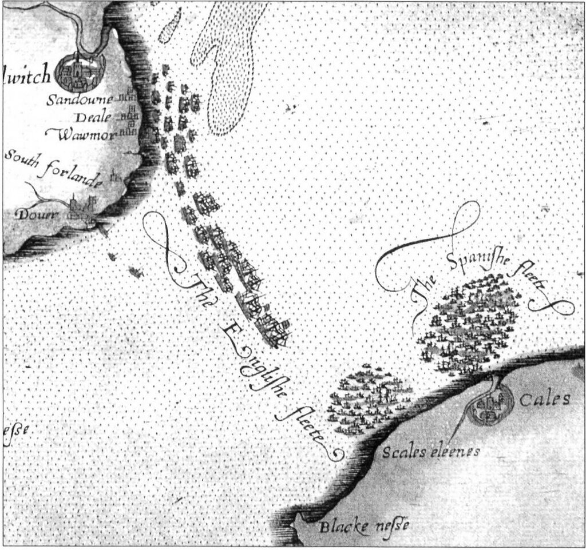

В субботу 6 августа противник преследовал нас весь день, оставаясь на дистанции в полторы лиги и атакуя время от времени. В этот день мы получили сообщение, что галеры и флагманский корабль эскадры Хуана Мартинеса де Рекальде находятся в Конке и что принц Парма еще не готов. Вражеский флот в тот момент насчитывал девяносто две единицы, а к наступлению сумерек мы насчитали еще тридцать два корабля, которые присоединились к основным силам. Мы полагали, это были корабли, которые стояли в Дувре. В этот момент наша Армада стала на якорь в Кале, совершенно против желания адмирала Хуана Мартинеса де Рекальде. Противник также бросил якоря неподалеку от нас и поэтому мы находились в боевой готовности всю ночь.

Соединение эскадры Сеймура с основными силами английского флота в районе Кале. Фрагмент карты 1590 года из альбома Роберта Адамса Expeditionis Hispanorum in Angliam vera descriptio Anno Do. MDLXXXVIII
Примечание 16. Приведенная в дневнике Рекальде информация за 6 августа лишь частично соответствовала действительности. Флагманский корабль его эскадры Santa Ana находился не в Конке (Бретань), а в Сен Ва ла Уг (La Hogue, Нормандия), а четыре галеры нашли убежище в различных портах Бискайского залива еще на начальном этапе перехода Армады. Я думаю, галерам Армады мы посвятим отдельный пост, все-таки галеры – это наше все.
Примечание 17. Что касается готовности или неготовности испанского наместника (штатгальтера) Нидерландов Алессандро Фарнезе, герцога Пармского, то, пусть это не покажется парадоксальным, но именно лишь 6 августа он получил известие о выходе Непобедимой Армады из Ла-Коруньи! Вряд ли в истории войн имеется второй такой пример полного отсутствия связи между двумя командующими одной операции, как это имело место во время похода Непобедимой Армады, самой крупной амфибийной операции во всей европейской истории к тому времени. Еще 10 июня, когда Армада вышла на траверз мыса Финистерре на западном побережье Испании, и когда до встречи с армией герцога Пармы, по расчетам Медина-Сидония, оставалось две недели, командующий Армадой послал быстроходную забру со своим посланцем на борту, который должен был информировать герцога Пармы о начале выдвижения Армады. Свое следующее послание Медина-Сидония отправил 25 июля, сразу после выхода из Ла-Коруньи, где он сообщает, что после вынужденной задержки Армада вновь на пути к своей цели. Не получив подтверждения, что отправленные сообщения дошли до адресата, 31 июля, находясь на траверзе Плимута, Медина-Сидония вновь отправляет герцогу Пармы письмо с просьбой прислать лоцманов, знакомых с побережьем Фландрии, а четыре дня спустя, после боевых действий у острова Уайт, следует новое послание с отчаянной просьбой прислать ядра и порох и подтвердить свое прибытие на назначенное ранее рандеву. Не получив ответа и на это послание, 5 августа Медина-Сидония делает очередную попытку, на этот раз посылает одного из своих штурманов, чтобы разъяснить все перипетии похода и вызванные ими задержки. Но несмотря на все эти попытки связаться с герцогом Пармы, ответа с берегов Фландрии не получили даже тогда, когда Армада стала на якорь в Кале, уже в непосредственной близости от армии Пармы, отряды которой находились близ Дюнкерка, в семи лигах от Кале. Медина-Сидония был в полном недоумении: «Я постоянно пишу Вашему Превосходительству, и не только не получаю ответа на свои письма, но даже не знаю, дошли ли они до Вас». И лишь поздним вечером 6 августа был получен первый ответ. Причем первоначально пинас, на котором пришло долгожданное послание, был принят за вражеский корабль и обстрелян испанскими кораблями. Может быть, и правы были артиллеристы Армады, так как ответ герцога Пармы был неутешительным: его армия будет готова к погрузке на корабли Армады лишь к следующей пятнице. А это означало для испанского флота провести в ожидании еще шесть дней. Еще шесть дней в условиях висящего «на хвосте» флота англичан, сохраняющего господство в окружающей акватории и пользующегося благоприятным ветром. И при этом не имея понятия, как подойти к берегу через Фламандские отмели, известные у испанских моряков как «банки Фландрии». Настолько опасные, что возникшее в те времена в испанском языке выражение Pasar por los bancos de Flandes – «Пройти через банки Фландрии» стало относиться к преодолению самых тяжелых препятствий. (Причем стало настолько широко применяться, что Сервантес мог даже вложить его в уста такого простолюдина, как Санчо Панса:
Juro en mi ánima que ella es una chapada moza, y que puede pasar por los bancos de Flandes.
Клянусь спасением моей души, девица она видная: и на супружеской кровати, и через отмели Фландрии проберется.
Мигель де Сервантес Сааведра ХИТРОУМНЫЙ ИДАЛЬГО ДОН КИХОТ ЛАМАНЧСКИЙ, кн. II, гл.21)
Поместим карту этой акватории; хотя она и относится к следующему эпизоду эпопеи Непобедимой армады, но уже сейчас будет полезно взглянуть на нее, чтобы оценить всю тяжесть стоящей перед испанским флотом задачи.

Карта банок Фландрии из книги Hale, John Richard «The Story of the Great Armada»
А если учесть, что партизаны Соединенных провинций перед приходом Армады заблаговременно убрали все навигационные знаки и буи в этом регионе, задача становилась во сто крат сложнее. Медина-Сидония скрывал масштаб опасности от большей части своих подчиненных. Как позже на допросе говорил дон Диего Пиментель, плененный англичанами командир Сицилийской терции, которая размещалась на португальском галеоне Сан Матео, большая часть командования Армады не знала истинного положения дел во Фландрии. Пиментель ожидал, как он признался на допросе, что Медина-Сидония нанесет мощный удар по побережью и соединится с армией герцога Пармского. Он и понятия не имел, что в окрестности Дюнкерка у англичан находится сильная эскадра, которая, наряду с природными особенностями акватории, способна помешать подобным попыткам Армады.
Преодолеть фламандские отмели из всего состава Армады могли разве что галеасы да самые малотоннажные галеоны. Но Медина-Сидония не осмелился дробить свои силы на виду у грозного противника. С другой стороны, надо было быть совсем несведущим в военном деле человеком, чтобы допустить, что англичане оставят в покое на целых шесть дней стоящих у них под боком испанцев. Да и силы голландцев, блокирующих с моря район Дюнкерка, вряд ли допустили бы выход в море любых плавсредств с испанскими солдатами на борту. И более всего: эскадра лорда Сеймура, которая покинула якорную стоянку Даунс (The Downs) на юге Северного моря, присоединилась к другим эскадрам под командованием лорда-адмирала Чарльза Говарда.
Обстановка накалялась. Требовалось принятие решительных мер обеими сторонами. О том, какое развитие получила эта история, поговорим в следующий раз.